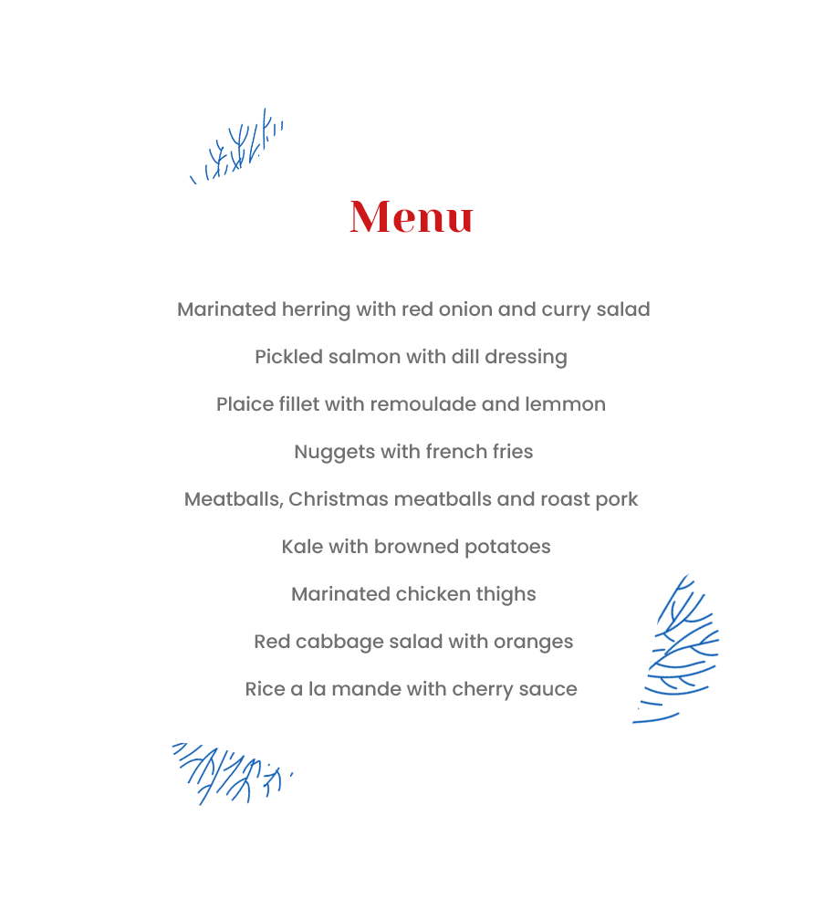

Food is an inseparatable part of Christmas traditions. Due to this we encourage you to visit our Christmas buffet and embrace how food is able to connect us to each other, to our past, memories and most importantly helps us to create new ones. Christmas buffet is served twice every evening at 17-18:30 and 18:45 - 20:15. We would kindly recommend you to book a table in advance! Have a look at our Christmas buffet menu:
This year Aalborg Zoo invites you to visit completely personal Mette Blomsterberg's Christmas universe. You do not want to miss out on seeing her decorated Christmas cabin where you can buy a selection of her baked goods and get a recipe or few to bring to your holiday table. In addition to this, do not shy of bringing your copy of Mette’s new book called My Christmas. She would love to personally sign it and share with you what Christmas means to her and her family. You can meet Mette Blomsterberg in person four days in November and December: November 26, December 3, December 10 and December 17. Mette Blomsterberg's Christmas cabin can be visited throughout the opening period from 13 November to 29 December.
Det Gamle Apotek is a well-known Christmas shop name in many households throughout Denmark and typically - the first stop when looking for Christmas decorations and gifts during the holidays. This year Det Gamle Apotek can completely change your holiday shopping experience by becoming an undeground Christmas universe full of crystals and cool, Nordic colors. But get ready to be accompanied by curious animals watching you from the sidelines!